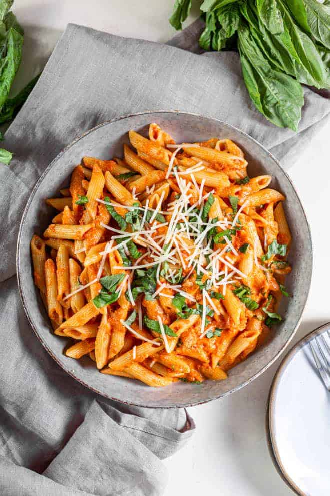

Description
Another of my favourites is pasta. I just love Italian food. Pasta, pizza, tiramisu... it's all just so delicious, right?
This recipe is a very simple, yet utterly delicious tomato pasta recipe. Just glance at the ingredients and see how simple this is.
Simple, cheap, healthy and so delicious.
Ingredients
- Tinned tomatoes
- A few cloves of garlic
- Good quality extra virgin olive oil
- Salt and pepper for seasoning
- Pasta of your choice (80g per person)
- Cheese (pecorino romano or parmigiano reggiano is delicious)
- Optional- fresh basil leaves
Steps
Preparation
Preparation for this dish is really simple. All we really need to do is to crush the garlic under a knife,
removing the skin.
Cooking the pasta
The pasta shells are very delicate to cooking and easily ruined if left boiling for too long or left to dry out.
In order to stop sticking, the pasta shells need plenty of water, enough to dance around in, as well as ample salt to season.
Rule of thumb is to boil the pasta for one/two minutes less than the stated cooking time on the packet.
This should ensure al dente pasta everytime which is important as the cooking will be finished off in the sauce.
- In a large pansee above add plenty of cold water and season well with salt before bringing to the boil.
The water needs to be well salted in order to season the pasta. Unsalted water results in flavourless pasta!!
- Once the pasta water has boiled add in the pasta, cooking per instructed on the packetsee above.
- In a nicely sized fry pan add a good dollop of olive oil, followed by the crushed garlic.
Now we will turn the heat on to a medium low, infusing the garlic into the oil.
- Once the garlic becomes fragrant you may remove it and add in the can of tomatoes.
Fill half the can with water from the tap, giving it a little swirl before adding it in with the tomatoes.
Season with some salt and let cook down.
- Once the tomato sauce has reached your desired consistency and taste (seasoning with salt and black pepper) it's time
to add the al dente pasta shells. Mix in the pasta shells with a ladlefull of pasta watersee note and combine.
- Once combined serve to a plate garnishing with plenty of grated cheese and a drizzle of extra virgin olive oil.
If desired sprinkle a handful of chopped basil leaves over the top to add some extra contrast and flavour.
Notes
Adding some of the starchy pasta water into the sauce when combining helps really elevate the dish.
It works as both seasoning and the starch really brings the sauce together.
Back home